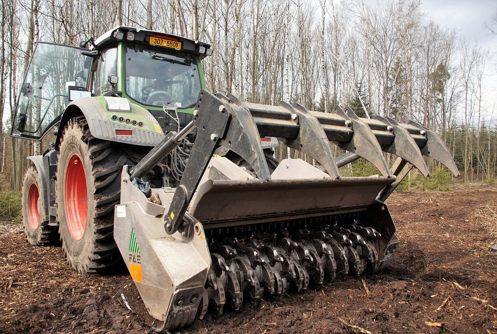

SERVICE
危険木伐採
倒木や支障木など、暮らしや道路・施設に影響する木の伐採に対応します。
危険木伐採について
倒木の恐れがある木や、道路・建物・施設に影響する支障木について、現地の状況を確認したうえで安全な作業方法を検討します。
周辺環境や作業スペース、搬出条件に配慮し、伐採後の片付けや木材の再資源化までご相談いただけます。
ご相談のポイント
- 倒木リスクや周辺への影響を確認し、安全を優先して作業計画を立てます。
- 道路・建物・施設周辺など、現場条件に応じた対応を検討します。
- 伐採後の搬出や木材の活用まで一括でご相談いただけます。
WHO IT HELPS
このような方へ
山林所有者、工務店、土木会社、自治体
対応内容
- 倒木・老木の確認
- 道路や建物周辺の支障木処理
- 伐採後の搬出
- 木材の再資源化
選ばれる理由
- 安全第一の作業計画
- 重機作業にも対応
- 伐採後の処分・活用まで相談可能
CONTACT
危険木伐採について、まずは状況をお聞かせください。
山林整備、危険木伐採、木材廃棄物処分、木質チップ製造、バイオマス燃料供給まで、内容に応じてご提案します。